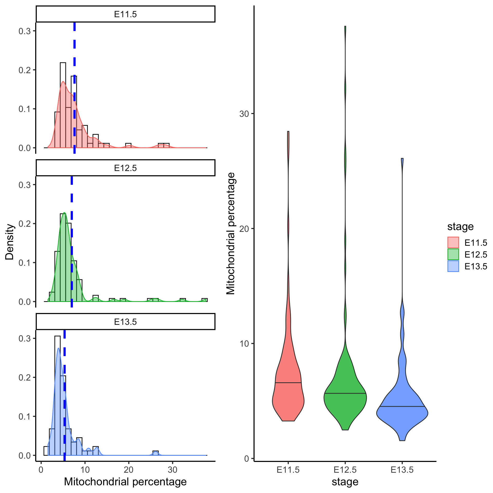

QC of single cell data
Sydney Precision Bioinformatics Group
04 November 2019
1 Introduction
One of the first steps in single-cell RNA-seq analysis is to perform a quality check of the data we have sequenced in an experiment. This process is a necessary step before we proceed to data merging and other downstream data analyses. There are multiple quality control (QC) tools for sequencing data that we can use for both bulk and single-cell RNA-seq data. Here, we will look at some QC measures and generate a report on the quality of our single-cell data.
1.1 Load in packages
Load in packages required to generate the QC plots.
library(DropletUtils)
library(dplyr)
library(ggplot2)
library(scales)
library(ggpubr)
library(stringr)
library(forcats)
theme_set(theme_classic(16))2 The mouse liver dataset (Su et al. 2017)
For demonstration purpose, we will perform some QC checks on a single-cell mouse liver dataset generated by Su et al. (2017). This liver dataset contains 507 cells at seven developmental stages between embryonic day 11.5 and postnatal day 2.5. The cells were sequenced using the Fluidigm C1 platform and the reads are paired end. The file containing the raw count matrix is located in the data folder in the zip file you have downloaded as GSE87795_counts.csv.
The dataset of read counts is stored in a csv file (which is simply an Excel file). We can load the data into R using the read.csv() function. Here, we will use two options:
header = TRUEmeans that we will take the first row of the file as the column names.row.names = 1means that we will take the first column of the file as the row names.
datapath = "./data/"
# datapath = "/home/data/"
liver = read.csv(file = paste0(datapath, "GSE87795_counts.csv"),
header = TRUE,
row.names = 1)First, let’s check some basics of this data. This dataset contains 51918 rows and 507 columns. Each row corresponds to a gene, and each column corresponds to a cell. The first five rows and five columns of the dataset can be shown using liver[1:5, 1:5].
dim(liver)## [1] 51918 507liver[1:5, 1:5]## E11.5_C01 E11.5_C03 E11.5_C05 E11.5_C06 E11.5_C07
## ENSMUSG00000102693 0 0 0 0 0
## ENSMUSG00000064842 0 0 0 0 0
## ENSMUSG00000051951 0 0 0 0 0
## ENSMUSG00000102851 0 0 0 0 0
## ENSMUSG00000103377 0 0 0 0 0Notice that the column names of this data contain information regarding the developmental stage of each cell when it was sequenced duing the experiment. We can clean up this information using a short line of code.
With some code, we can produce a frequency table of the number of cells at each developmental stage.
stage = str_split(colnames(liver), "_") %>%
sapply("[[", 1)
table(stage)## stage
## E11.5 E12.5 E13.5 E14.5 E16.5 E18.5 P2.5
## 70 100 71 99 78 58 312.1 A quick pre-processing of the matrix
A simple way to make single-cell datasets manageable for analysis is to remove genes that are not expressed in any cells (i.e. genes that have zero counts across all cells). Since these genes do not contain any measurable signals, removing them does not affect the downstream analysis. In addition, a smaller dataset actually improves the performance and speed of most algorithms.
liver = liver[rowSums(liver) != 0, ]
dim(liver)## [1] 37766 507Here, we first used rowSums(liver) to calculate the total counts for each gene across all cells. rowSums(liver) != 0 then looks for those genes that are not equal (represented by the != symbol) zeroes. And then we will subset only those rows in the data (remember, rows of the data are genes) that are not purely zeroes using the square brackets [,].
Quick quiz
- How many genes do we have now?
- Did we lose any cells (columns)?
3 Waterfall plot
The waterfall plot shows the log-count against the log-rank of each barcode. The barcodes are ranked based on the number of counts each barcode has. We will compute these statistics using the barcodeRanks function from the DropletUtils package. And then we will extract the statistics and perform some plotting using the ggplot2 package.
The waterfall plots show two points of interest:
- inflection point is the point on the curve where the first derivative is minimised
- knee point is the point where the signed curvature is minimised
These two points potentially indicate empty droplets (background barcodes). To elaborate on this concept, it is helpful to know that for microfluidic sequencing systems each droplet contains a bead and each bead is marked uniquely with a barcode. Intuitively, we can consider a droplet and the barcode associated with it as being a unique cell. Due to limitation of the technology, sometimes the droplet doesn’t always contain a cell, or it might contain multiples cells (which we will not explore here). We can now use the waterfall plot to detect those empty droplets. The barcodes with the number of counts dropping rapidly beyond the knee point may suggest empty reads.
barcode = DropletUtils::barcodeRanks(liver)
barcode_data = as.data.frame(barcode)
barcode_points = data.frame(
type = c("inflection", "knee"),
value = c(barcode@metadata$inflection, barcode@metadata$knee))
ggplot(data = barcode_data, aes(x = rank, y = total)) +
geom_point() +
geom_hline(data = barcode_points,
aes(yintercept = value,
colour = type), linetype = 2) +
scale_x_log10(breaks = trans_breaks("log10", function(x) 10^x),
labels = trans_format("log10", math_format(10^.x))) +
scale_y_log10(breaks = trans_breaks("log10", function(x) 10^x),
labels = trans_format("log10", math_format(10^.x))) +
labs(title = "Waterfall plot of read counts (log)",
x = "Log Rank",
y = "Log counts")
Quick quiz
Based on the waterfall plot, should we filter out any cells?
4 Library size
Next, we can evaluate the total library size, that is the total read counts per cell. The library size may be used as an indicator of sequencing depth and it is a typical diagnostic for RNA-Seq data (for both the bulk and singl-cell type).
A small library size for a cell may suggest abnormalies and lack of captured signals. In such a case, the cells with unusually small library size should be removed.
We will begin with a data.frame capturing the characteristics of each column cell_plotdf_full and then perform plotting with ggplot2. This cell_plotdf_full has four columns:
cell_name: The name of each cell in the datastage: The developmental time stage of each cell.library: The total number of read counts for a cell.num_genes: The total number of non-zero measurements for a cell. i.e. Number of genes expressed in a cell.
For the ease of visualisation, we will subset our cell_plotdf_full to only those cells in the 11.5, 12.5 and 13.5 development stage. Then, we will also calculate the mean of library and num_genes for each development stage.
cell_plotdf_full = data.frame(
cell_name = colnames(liver),
stage = stage,
library = colSums(liver),
num_genes = colSums(liver != 0)
)
head(cell_plotdf_full)## cell_name stage library num_genes
## E11.5_C01 E11.5_C01 E11.5 1850822 11392
## E11.5_C03 E11.5_C03 E11.5 2638215 8699
## E11.5_C05 E11.5_C05 E11.5 3011095 9648
## E11.5_C06 E11.5_C06 E11.5 1995783 10814
## E11.5_C07 E11.5_C07 E11.5 3690986 10825
## E11.5_C09 E11.5_C09 E11.5 2264731 6489cell_plotdf = cell_plotdf_full %>%
dplyr::filter(stage %in% c("E11.5", "E12.5", "E13.5"))
cell_plotdf_mean = cell_plotdf %>%
dplyr::group_by(stage) %>%
dplyr::summarise(library_mean = mean(library),
num_genes_mean = mean(num_genes))
cell_plotdf_mean## # A tibble: 3 x 3
## stage library_mean num_genes_mean
## <fct> <dbl> <dbl>
## 1 E11.5 2838642. 9262.
## 2 E12.5 3094663. 9346.
## 3 E13.5 3639297. 9813.ggplot(cell_plotdf,
aes(x = library/1e6, colour = stage, fill = stage)) +
geom_histogram(aes(y = ..density..), colour = "black", fill = "white", bins = 30) +
geom_density(alpha = 0.4) +
geom_vline(data = cell_plotdf_mean,
aes(xintercept = library_mean/1e6),
colour = "blue", linetype = "dashed", size = 1.5) +
# scale_x_continuous(breaks = 1:6) +
labs(title = "Histogram of library size",
x = "library size (in millions)",
y = "density") +
facet_wrap(~ stage, ncol = 3)When we compare the distribution of library size for all cells at three developmental stages, we can see that mean library size is lowest in E11.5 cells (mean = 2.838642 million) and highest in E13.5 cells (mean = 3.639297 million). E12.5 cells (mean = 3.094663 million) have a greater distribution of cells with few reads. Cells with very few reads are likely to have failed to capture the transcriptome of a cell, and thus should be filtered.
5 Number of uniquely expressed genes
Closely related to the idea of a library size is the number of uniquely expressed genes. In addition to sequencing depth, we can also filter for cells that express genes with sufficiently good coverage of the transcriptome. This is to ensure that we capture cells with not only sufficient reads but also those that have reads that are relatively evenly distributed across the transcriptome. To this end, we measure the number of uniquely expressed genes in individual cells.
ggplot(cell_plotdf,
aes(x = num_genes/1000, colour = stage, fill = stage)) +
geom_histogram(aes(y = ..density..), colour = "black", fill = "white", bins = 30) +
geom_density(alpha = 0.4) +
geom_vline(data = cell_plotdf_mean,
aes(xintercept = num_genes_mean/1000),
colour = "blue", linetype = "dashed", size = 1.5) +
labs(title = "Histogram of number of unique genes expressed",
x = "Number of unique genes expressed (in thousands)",
y = "density") +
facet_wrap(~ stage, ncol = 3)
From above, we can see that most cells have between 9000-10,000 detected genes. This is roughly the amount expected for high-depth scRNA-seq; however, the expected value may vary between experimental protocols, sequencing depth, and cell type used. Note that, unlike library size, a “heavy tail” can be observed for each of the distribution, indicating an unequal detection of genes across populations. Filtering out cells with low number of genes identified is another way to improve the quality of the dataset.
6 Mitochondrial gene expression
Unhealthy or dying cells are associated with high expression of mitochondrial genes, and thus the proportion of mitochondrial expression is commonly used as a quality metric.
mito_genes <- c("ENSMUSG00000064336", "ENSMUSG00000064337", "ENSMUSG00000064338", "ENSMUSG00000064339", "ENSMUSG00000064340", "ENSMUSG00000064341", "ENSMUSG00000064342", "ENSMUSG00000064343", "ENSMUSG00000064344", "ENSMUSG00000064345", "ENSMUSG00000064346", "ENSMUSG00000064347", "ENSMUSG00000064348", "ENSMUSG00000064349", "ENSMUSG00000064350", "ENSMUSG00000064351", "ENSMUSG00000064352", "ENSMUSG00000064353", "ENSMUSG00000064354", "ENSMUSG00000064355", "ENSMUSG00000064356", "ENSMUSG00000064357", "ENSMUSG00000064358", "ENSMUSG00000064359", "ENSMUSG00000064360", "ENSMUSG00000064361", "ENSMUSG00000065947", "ENSMUSG00000064363", "ENSMUSG00000064364", "ENSMUSG00000064365", "ENSMUSG00000064366", "ENSMUSG00000064367", "ENSMUSG00000064368", "ENSMUSG00000064369", "ENSMUSG00000064370", "ENSMUSG00000064371", "ENSMUSG00000064372", "ENSMUSG00000096105")
liver_mito = liver[mito_genes, ]
mito_plotdf_full = data.frame(
cell_name = colnames(liver_mito),
stage = stage,
mito_percent = colSums(liver_mito)/colSums(liver) * 100
)
mito_plotdf = mito_plotdf_full %>% dplyr::filter(stage %in% c("E11.5", "E12.5", "E13.5"))
mito_plotdf_mean = mito_plotdf %>%
group_by(stage) %>%
dplyr::summarise(mito_percent_mean = mean(mito_percent))
mito_plotdf_mean## # A tibble: 3 x 2
## stage mito_percent_mean
## <fct> <dbl>
## 1 E11.5 7.61
## 2 E12.5 6.99
## 3 E13.5 5.35g1 = ggplot(mito_plotdf,
aes(x = mito_percent, colour = stage, fill = stage)) +
geom_histogram(aes(y = ..density..), colour = "black", fill = "white", bins = 30) +
geom_density(alpha = 0.4) +
geom_vline(data = mito_plotdf_mean,
aes(xintercept = mito_percent_mean),
colour = "blue", linetype = "dashed", size = 1.5) +
labs(x = "Mitochondrial percentage",
y = "Density") +
facet_wrap(~ stage, nrow = 3)
g2 = ggplot(mito_plotdf,
aes(x = stage,
y = mito_percent,
fill = stage)) +
geom_violin(alpha = 0.8, draw_quantiles = 0.5) +
labs(y = "Mitochondrial percentage")
ggpubr::ggarrange(g1, g2, ncol= 2, common.legend = TRUE, legend = "right")
Filtering cells with greater than 10% of mitochondrial gene expression would remove cells that have abnormally high mitochondrial gene expression.
Quick quiz
- Based on the figure above, would you say most cells are unhealthy or healthy?
- How does the percentage of mitochondrial gene expression change over time point?
7 Contribution by the top 50 expressed genes
As well as the above metrics, it is often instructive to know the proportions of the reads consumed by the top 50 expressed genes. Moreover, an assessment of the top gene list before and after filtering can give you a good indication of whether the filtering has been successful, as the top genes are often occupied by mitochondrial genes from unhealthy cells.
We can calculate the top 50 expressed genes for all cells as shown below.
## We will go to each column of the matrix, and divide the column by its sum
## and convert this into a percentage.
## The result is a matrix with each column that sum up to 100%.
liver_percent = sweep(liver, 2, STATS = colSums(liver), FUN = "/") * 100
liver_percent %>% colSums %>% head## E11.5_C01 E11.5_C03 E11.5_C05 E11.5_C06 E11.5_C07 E11.5_C09
## 100 100 100 100 100 100liver_percent_meanEachGene = rowMeans(liver_percent)
top50Genes = liver_percent_meanEachGene %>% sort(decreasing = TRUE) %>% head(50) %>% names
liver_percent_plotdf = liver_percent[top50Genes, ] %>%
as.matrix %>%
reshape2::melt(varnames = c("gene_name", "cell_name"),
value.name = "percent") %>%
dplyr::mutate(gene_name = fct_reorder(gene_name, percent, mean))
liver_percent_plotdf %>%
ggplot(aes(x = gene_name, y = percent, colour = gene_name)) +
geom_violin() +
geom_jitter(alpha = 0.2) +
coord_flip() +
labs(x = "genes",
y = "percent of library",
title = "Top 50 genes for all cell stages") +
theme(legend.position = "none")The plot above shows that there are three spike-in genes within the top 50 genes. The presence of multiple spike-ins at the top of the list may suggest that the concentration of spike-ins added to the experiment may need to be optimized for subsequent experiments. Overall, the relatively flat distributions indicate good coverage of the transcriptome.
Alternatively, we can calculate the top 50 expressed genes for each stage, but we will leave this as an extension exercise.
liver_percent_split = split.data.frame(x = t(liver_percent), f = stage) %>% lapply(t)
liver_percent_split_meanEachGene = liver_percent_split %>% lapply(rowMeans)
e115_top50 = liver_percent_split_meanEachGene$E11.5 %>% sort(decreasing = TRUE) %>% head(50) %>% names
e115_liver_percent = liver_percent[e115_top50, stage == "E11.5"] %>%
as.matrix %>%
reshape2::melt(varnames = c("gene_name", "cell_name"),
value.name = "percent") %>%
dplyr::mutate(gene_name = fct_reorder(gene_name, percent, mean))
e115_liver_percent %>%
ggplot(aes(x = gene_name, y = percent, colour = gene_name)) +
geom_violin() +
geom_jitter(alpha = 0.2) +
coord_flip() +
labs(x = "genes",
y = "percent of library",
title = "Top 50 expressed genes for E11.5 cells") +
theme(legend.position = "none")8 Filtering
Here we will give a demonstration of how you can remove some of the cells from the dataset.
In the DropletUtils package, it was recommended that we should only retain those cells above the inflection point in the plot. So we will perform subsetiting on the cells (columns) of this data.
table(barcode_data$total >= barcode@metadata$inflection)##
## FALSE TRUE
## 3 504liver_new = liver[, barcode_data$total >= barcode@metadata$inflection]
dim(liver_new)## [1] 37766 504Recall in the mitochondiral plot, we have identified cells with a mitochondrial percentage greater than 10% as cells that we should remove. Thus, we will subset the data on the columns to retain those cells with a mitochondrial percentage less or equal to 10%.
Finally we should check that the dimension of the dataset is correct after filtering.
dim(liver)
liver_new2 = liver[, barcode_data$total >= barcode@metadata$inflection & mito_plotdf_full$mito_percent <= 10]
dim(liver_new2)9 Session Info
sessionInfo()## R version 3.6.1 (2019-07-05)
## Platform: x86_64-apple-darwin15.6.0 (64-bit)
## Running under: macOS Mojave 10.14.6
##
## Matrix products: default
## BLAS: /Library/Frameworks/R.framework/Versions/3.6/Resources/lib/libRblas.0.dylib
## LAPACK: /Library/Frameworks/R.framework/Versions/3.6/Resources/lib/libRlapack.dylib
##
## locale:
## [1] en_AU.UTF-8/en_AU.UTF-8/en_AU.UTF-8/C/en_AU.UTF-8/en_AU.UTF-8
##
## attached base packages:
## [1] splines parallel stats4 stats graphics grDevices utils
## [8] datasets methods base
##
## other attached packages:
## [1] forcats_0.4.0 stringr_1.4.0
## [3] scales_1.0.0 DropletUtils_1.6.0
## [5] scClassify_0.2.0 monocle_2.14.0
## [7] DDRTree_0.1.5 irlba_2.3.3
## [9] VGAM_1.1-1 Matrix_1.2-17
## [11] plyr_1.8.4 ggpubr_0.2.3
## [13] magrittr_1.5 viridis_0.5.1
## [15] viridisLite_0.3.0 MAST_1.12.0
## [17] ggplot2_3.2.1 cluster_2.1.0
## [19] Rtsne_0.15 mclust_5.4.5
## [21] scdney_0.1.5 edgeR_3.28.0
## [23] limma_3.42.0 dplyr_0.8.3
## [25] SingleCellExperiment_1.8.0 SummarizedExperiment_1.16.0
## [27] DelayedArray_0.12.0 BiocParallel_1.20.0
## [29] matrixStats_0.55.0 Biobase_2.46.0
## [31] GenomicRanges_1.38.0 GenomeInfoDb_1.22.0
## [33] IRanges_2.20.0 S4Vectors_0.24.0
## [35] BiocGenerics_0.32.0
##
## loaded via a namespace (and not attached):
## [1] utf8_1.1.4 R.utils_2.9.0 tidyselect_0.2.5
## [4] lme4_1.1-21 htmlwidgets_1.5.1 grid_3.6.1
## [7] combinat_0.0-8 docopt_0.6.1 munsell_0.5.0
## [10] codetools_0.2-16 statmod_1.4.32 withr_2.1.2
## [13] colorspace_1.4-1 fastICA_1.2-2 highr_0.8
## [16] knitr_1.25 rstudioapi_0.10 DescTools_0.99.29
## [19] ggsignif_0.6.0 pbmcapply_1.5.0 labeling_0.3
## [22] slam_0.1-45 GenomeInfoDbData_1.2.2 polyclip_1.10-0
## [25] farver_1.1.0 pheatmap_1.0.12 rhdf5_2.30.0
## [28] vctrs_0.2.0 generics_0.0.2 ipred_0.9-9
## [31] xfun_0.10 randomForest_4.6-14 diptest_0.75-7
## [34] R6_2.4.0 doParallel_1.0.15 graphlayouts_0.5.0
## [37] locfit_1.5-9.1 bitops_1.0-6 assertthat_0.2.1
## [40] ggraph_2.0.0 nnet_7.3-12 gtable_0.3.0
## [43] tidygraph_1.1.2 timeDate_3043.102 rlang_0.4.1
## [46] zeallot_0.1.0 lazyeval_0.2.2 ModelMetrics_1.2.2
## [49] acepack_1.4.1 broom_0.5.2 checkmate_1.9.4
## [52] yaml_2.2.0 reshape2_1.4.3 abind_1.4-5
## [55] backports_1.1.5 Hmisc_4.2-0 caret_6.0-84
## [58] tools_3.6.1 lava_1.6.6 clusteval_0.1
## [61] ellipsis_0.3.0 RColorBrewer_1.1-2 proxy_0.4-23
## [64] ggridges_0.5.1 Rcpp_1.0.2 base64enc_0.1-3
## [67] zlibbioc_1.32.0 purrr_0.3.3 RCurl_1.95-4.12
## [70] densityClust_0.3 rpart_4.1-15 cowplot_1.0.0
## [73] ggrepel_0.8.1 data.table_1.12.6 RANN_2.6.1
## [76] mvtnorm_1.0-11 mitml_0.3-7 amap_0.8-17
## [79] evaluate_0.14 sparsesvd_0.2 gridExtra_2.3
## [82] HSMMSingleCell_1.5.0 compiler_3.6.1 tibble_2.1.3
## [85] mice_3.6.0 crayon_1.3.4 R.oo_1.22.0
## [88] minqa_1.2.4 htmltools_0.4.0 proxyC_0.1.5
## [91] segmented_1.0-0 mgcv_1.8-29 Formula_1.2-3
## [94] snow_0.4-3 tidyr_1.0.0 expm_0.999-4
## [97] RcppParallel_4.4.4 lubridate_1.7.4 tweenr_1.0.1
## [100] MASS_7.3-51.4 boot_1.3-23 cli_1.1.0
## [103] R.methodsS3_1.7.1 pan_1.6 gower_0.2.1
## [106] igraph_1.2.4.1 pkgconfig_2.0.3 foreign_0.8-72
## [109] recipes_0.1.7 hopach_2.46.0 foreach_1.4.7
## [112] dqrng_0.2.1 XVector_0.26.0 minpack.lm_1.2-1
## [115] prodlim_2018.04.18 digest_0.6.22 rmarkdown_1.16
## [118] htmlTable_1.13.2 dendextend_1.12.0 jomo_2.6-9
## [121] nloptr_1.2.1 lifecycle_0.1.0 nlme_3.1-141
## [124] Rhdf5lib_1.8.0 fansi_0.4.0 pillar_1.4.2
## [127] lattice_0.20-38 survival_2.44-1.1 glue_1.3.1
## [130] qlcMatrix_0.9.7 FNN_1.1.3 iterators_1.0.12
## [133] HDF5Array_1.14.0 ggforce_0.3.1 class_7.3-15
## [136] stringi_1.4.3 mixtools_1.1.0 doSNOW_1.0.18
## [139] latticeExtra_0.6-28 e1071_1.7-2